강의 소개
오늘 우리가 할 약속
핵심외울 게 아니라 원리를 가져간다. 상황은 바뀌어도 원리는 그대로다.
원리 이해
→
실전 예제
→
카톡에 적용
예제로 어떻게 적용해야 하는지 학습한다. 중간에 휴식 2회 있으니 부담 없이.
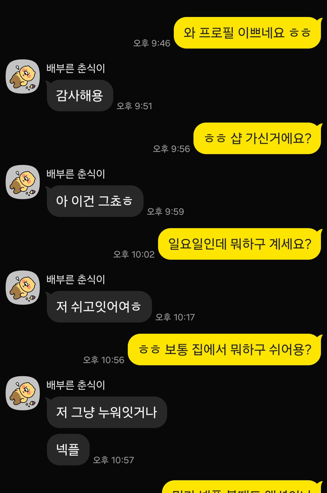
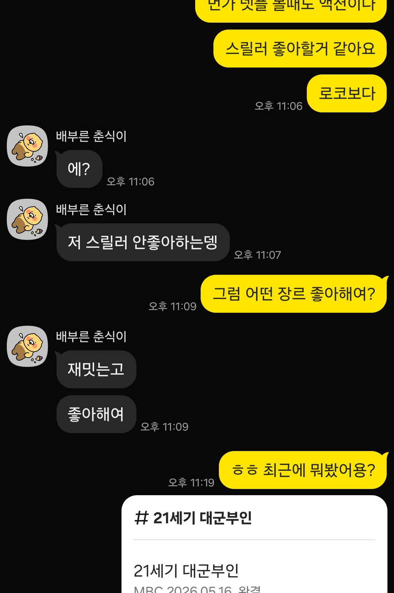
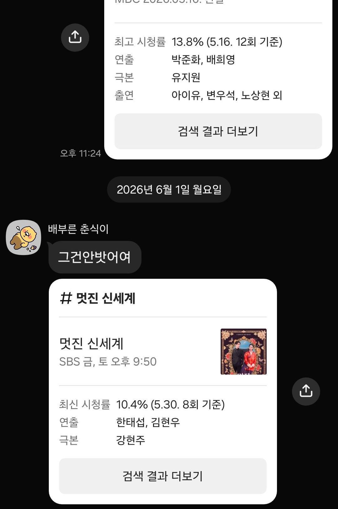
시작 전 · 사전과제
가져온 3가지를 지금 꺼내세요
✍ 오늘 모든 실습은 이 재료로 합니다
타겟 1명 — 실제로 잘되고 싶은 그 사람
막힌 카톡 — 끊기거나 답답했던 그 대화
자가진단 Before 점수 — 강의 끝에 다시 비교
안 가져왔어도 괜찮습니다. 지금 머릿속에 한 사람만 정하세요.
전체 커리큘럼
1부부터 4부까지, 이렇게 갑니다
1부
대화를 여는 법
- 마인드셋 · 3원칙 + 여유
- 프로필 사진
- 첫 톡 · 유형 3종
- 답장·읽씹 · 명분 5선
- 대화 운영 · 놀거리 9종
2부
키우고 만나는 법
- 매력 화술 · 4원리
- 호감 신호·말 놓기
- 상황별 대응 · 9가지 사전
- 위기 대응
- 만남 · 첫 만남 공식
3부
섹슈얼 토크 · 심화편
- 섹톡의 원리 · 뉘앙스·자의식
- 안전하게 · 빌드업 · 의미부여
- 플러팅 · 텐션
- 수위 사다리 · 5단계
- 기대치 · 차단/잠수
4부
부록
- 한마디 사전
- 체크리스트 · 3종
- NG 블랙리스트
- 신호 색인
- 상황별 색인
실제 카톡 흐름
번호를 받은 순간부터 만남까지 — 이 강의가 다루는 전 과정이다. 답장이 와도 호감이 없으면 식어서 짤린다.
왜 막히는가
왜 카톡을 배워야 하는가?
번호는 받는데, 카톡이 잘 안 된다.
외모·스펙 문제가 아니다
번호를 받았다면 최소한 문은 열린 상태다. 진짜 문제는 받은 번호로 카톡을 어떻게 이어가느냐다.
카톡은 타고난 센스가 아니라 배울 수 있는 기술이다. 기술에는 패턴이 있다.
대부분의 착각
"이 정도면 답장 오겠지"
대부분의 남자가 믿는 세 가지. 전부 착각이다.
잘생겼으니까
말을 잘하니까
매력 있으니까
현실여자는 대부분의 남자에게 친절할 이유가 없다.
💡 그렇기 때문에답장은 기다리는 게 아니라, 만들어내는 것이다. 이 착각을 버리는 순간부터 시작이다.
왜 유튜브·연애 강의를 봐도 안 될까
영상은 멘트만 준다 → 배워야 할 건 원리다
멘트외운 대사는 상황이 조금만 바뀌어도 안 통한다. 딱 그 상황에만 맞는 답이라 순서가 없다.
원리원리는 상황이 바뀌어도 그대로 통한다. 왜 그렇게 말하는지 알면 어디든 써먹는다.
💡 진짜 문제멘트를 몰라서 막히는 게 아니다. 원리를 모르니 상황이 바뀌면 또 막힌다. 오늘은 그 원리를 가져간다.
마인드 ①
조급함이 다 망친다
재촉하는 마음은 글자만이 아니라 화면 너머로 같이 전해진다.
✕ 조급함
답도 오기 전에 혼자 빈칸을 채운다
💡 왜 통할까
조급함은 화면 너머로 부담으로 전달된다. 답을 재촉할수록 상대는 숨 막혀 멀어지고, 여유를 지킬수록 편하게 다가온다.
마인드 ②
받는 사람이 되어본다
보내기 전 딱 3초 — "내가 여자라면 이 톡, 답하고 싶을까?"
✕ 답할 말이 없는 톡
정보만 받고 끝 — 받는 사람은 답할 게 없다
✓ 답할 거리를 주는 톡
한마디에 대화 거리를 얹으면 답이 이어진다
💡 왜 통할까
"99셨구나"처럼 정보만 받으면 받는 사람은 답할 거리가 없다. 내가 받는 사람이라 생각하고, 이어갈 한마디를 얹어야 답이 온다.
마인드 ③
잘 보이려 힘주지 않는다
애쓴 드립은 "나 좀 봐주세요"로 읽힌다. 친구한테 톡 하듯 담백하게.
✕ 힘 잔뜩 — 답장이 숙제가 된다
‹ 그분
기운 없어 보이는데 햇빛에 녹은 구슬아이스크림 상태? ㅋㅋ
아니면 과제 많아서 아아 수혈이 필요한 상태?
잘 보이려 짜낸 드립일수록 부담이 된다
✓ 담백하게
‹ 그분
오늘 좀 피곤해 보이네요 ㅎㅎ 무슨 일 있었어요?
힘 한 끗 빼면 답하기 편해진다
💡 왜 통할까
힘준 멘트일수록 안달난 티가 난다. 한 끗 덜어내면 오히려 여유 있어 보이고, 그 여유가 매력이 된다.
세 마인드를 관통하는 하나
카톡엔 보이지 않는 값이 붙는다
조급함도, 힘주기도 결국 같은 걸 깎아먹는다 — 내 '값'이다.
✕ 매달리면 값이 떨어진다연달아 보내고, 재촉하고, 애쓴 티가 나면 — "쉬운 사람"이 된다.
✓ 여유를 지키면 값이 지켜진다한 박자 늦게, 담백하게, 안 와도 그만 — "아쉬울 것 없는 사람"이 된다.
💡 오늘 내내 판정은 하나기법이 달라도 물음은 같다 — "이 톡, 내 값을 올리나 내리나?" 여유가 매력인 이유가 바로 이 값이다.
여유의 정체
여유는 성격이 아니라 숫자에서 나온다
비울 게 하나뿐이면 절대 안 비워진다. 한 명에 100을 걸지 말고 셋에 나눠 걸어라.
| 한 명에 집중 | 여러 명과 알아가기 (3~4명) |
|---|
| 답장 안 올 때 | 하루가 무너짐 | 별일 아님 |
| 톡의 무게 | 무겁고 절박함 | 가볍고 여유로움 |
| 상대가 느끼는 것 | 부담 | 편안함 |
| 결과 | 매달릴수록 멀어짐 | 여유로울수록 끌림 |
덜 애쓰는 쪽이 우위내 70 : 상대 30 → 끌려다님. 내가 늘 더 많이 보내고 있다면 그게 신호다. 한 박자 쉬어라.
실습
최근 카톡 대화 3개를 열어본다
내가 보낸 톡에서 '조급함'과 '힘 들어간 곳'을 직접 찾아 표시해본다.
✅ 이렇게 찾아본다 · 워크북 PART 1
답이 오기 전에 연달아 보낸 톡이 있나?
물음표로 끝나는 추궁성 문장이 있나?
"ㅎㅎ·ㅋㅋ"로 어색함을 메우고 있진 않나?
잠깐, 같이 생각해보기
마음에 드는 사람 번호를 드디어 받았습니다.
카톡 열기 전에, 뭐부터 할까요?
✋ 손 들어보세요
2강
프로필 사진
첫 톡을 보내기 전에, 이미 승부는 시작된다
0.5초의 판단
프사는 첫 톡보다 먼저 말한다
모르는 번호로 톡이 오면 다들 똑같이 한다. 말 읽기 전에 프로필부터 누른다.
핵심표정 · 활동 · 화질, 이 세 가지로 0.5초 안에 절반쯤 판단이 끝난다. 한번 박힌 인상은 잘 안 바뀐다.
💡 왜 통할까정보가 적을수록 사람은 단서 하나로 전체를 판단한다(후광효과). 사진 한 장이 괜찮으면 "괜찮은 사람이겠지" 하는 기대가 첫 톡까지 끌고 간다.
내릴 사진 ↔ 걸 사진
이건 내려라 ↔ 이게 통한다
✕ 이렇게 말고
얼굴이 안 보이는 프사
애니·캐릭터 / 풍경 / 단체샷 / 정면 셀카 / 명언·글귀
→ 누군지 모르거나, 흔하거나, 진지충처럼 보임
✓ 이렇게
"이 사람 좀 궁금한데?" 싶은 한 장
자연스러운 표정 / 여행·운동·취미 활동샷 / 밝고 또렷한 화질
→ 모델급 아니어도 분위기와 단서면 충분
핵심각도·조명·보정, 쓸 수 있는 건 다 써라. 단, 만났을 때 '같은 사람'인 건 알아볼 선까지만.
한 수 더
새로 안 찍어도 된다 — 이렇게 바꿔라
| 비포 | 애프터 | 한 줄 처방 |
|---|
| 정면 셀카 | 활동 사진 | 뭔가 하는 전신 한 장 — 대화 소재까지 딸려온다 |
| 어두운 사진 | 밝게 보정 | 밝기만 올려도 '관리하는 사람'으로 보인다 |
| 단체 사진 | 나만 잘라내기 | 잘 나온 단체샷에서 내 부분만 오려내기 |
💡 왜 통할까여행샷엔 "여행 좋아하세요?", 강아지샷엔 "강아지 키우세요?"가 따라온다. 잘 고른 프사는 상대가 먼저 말 걸 '구실(떡밥)'을 깔아준다.
실습
지금 내 프사를 열고 체크하라
하나라도 ✕면 오늘 갈아끼운다 · ✍ 워크북 PART 1
얼굴이 또렷이 보인다 (단체·풍경·캐릭터 ✕)
정색 말고 자연스러운 표정이다
여행·운동·취미 등 '활동'이 담겨 있다
밝고 화질이 또렷하다
실물보다 잘 나왔다 (단, '같은 사람' 선 안에서)
말 걸 떡밥이 한 개 이상 보인다
잠깐, 같이 생각해보기
머릿속에 보낼 첫 메시지를 하나 떠올려보세요.
그거 그대로 보내면 어떻게 될까요?
🤔 옆 사람과 한 줄 나눠보기
첫 톡이 중요한 이유
첫인상은 두 번 만들어진다
만난 자리에서 한 번, 첫 카톡에서 또 한 번. 번호는 입장권일 뿐, 진짜 평가는 첫 톡부터 시작된다.
오프라인 인상
+
카톡 첫 톡
=
머릿속 최종 이미지
💡 왜 통할까사람은 처음 받은 인상으로 그 뒤를 해석한다. 첫 톡이 좋으면 멀쩡한 말도 좋게 읽히고, 어색하면 무난한 말도 어색하게 읽힌다.
묻히는 첫 톡
"안녕하세요"는 카톡함에서 묻힌다
활발한 사람의 카톡함엔 똑같은 첫 톡이 줄줄이 쌓인다. 그 안에서 "안녕하세요"는 그냥 배경이다.
✕ 뻔한 첫 톡
남들 다 보내는 말 → 누가 보냈는지 구분도 안 됨
✓ 그 사람에게만 할 한마디
슬쩍 넘겨짚기 + 상황 전달 → "나를 봤다"는 신호
핵심첫 톡은 멋있을 필요가 없다. 남들과 '다르기만' 하면 절반은 이긴 것이다.
첫 톡 공식
관찰 → 단서 → 가볍게
관찰
프사·상황·상메
→
단서 하나
걸리는 것 하나
→
가볍게 던지기
부담 없이 한 줄
핵심누구에게나 보낼 수 있는 톡은, 누구나 보낼 수 있는 톡이다. 당신을 특별하게 만드는 한마디를 던져라.
생각해보기
이 사람에게 어떻게
카톡을 보내면 좋을까요?
이 2개의 사진을 보고, 보낼 첫 톡을 떠올려보세요
단서가 대화로
단서 하나가 대화로 굴러간다
"애니 좋아하세요?"가 아니라, 프사 속 캐릭터를 콕 집어 던지니 상대가 신나서 먼저 푼다.
‹ 그 사람
🐸
어 케로로 어케 알았지 ㅋㅋ 케로로 제일 좋아해요
핵심관찰(프사) → 단서(케로로) → 콕 집기. 디테일을 집을수록 상대는 "어케 알았지?" 하며 더 푼다.
만난 경로부터 다르다
어디서 만났냐에 따라 첫 톡 재료가 갈린다
공식은 같다. 단서를 어디서 줍느냐가 경로마다 다를 뿐이다.
① 로드 번따
길·클럽서 즉석 번호
먼저 누군지 환기 + 그 순간 소환
② 소개팅 어플
프로필 소개란이 단서
무작위 인사 ✕ — 소개란·사진서 한 줄 집기
③ 지인 소개
공통 지인이 다리
지인 보증 = 신뢰 기반. 들은 특징을 재료로
로드 번따는 밤·낮으로 또 갈린다밤(클럽·술자리): 술·분위기 텐션이라 다음 날 식기 쉽다 → 가볍게 재시동. 낮(길·카페): 맨정신 용기라 또렷이 기억한다 → 그 순간을 진심으로 소환.
첫 톡 유형 3종
단서 하나로 문을 연다
① 그날 상황 소환
번호 딴 직후
둘만 아는 순간 → 복붙 톡과 가장 멀다
② 프사 추측게임
정보가 적을 때
맞아도 틀려도 답이 따라온다
③ 상태메시지 활용
상메에 단서 있을 때
"당신 걸 봤다"는 신호, 늘 새 소재
인스타로 말 걸기
인스타는 단서 보물창고
핵심프사 한 장과는 비교가 안 된다. 아이디·소개란·피드 수십 장 — 단서가 없는 게 아니라 안 본 것이다.
| 피드 모습 | 읽히는 성향 | 이렇게 던진다 |
|---|
| 여행·맛집 많음 | 활동적·외향 | 그 장소·음식을 소재로 |
| 본인 사진 적음 | 내향·신중 | "뭔가 되게 I일 거 같아요 ㅋㅋ" |
| 피드 잘 꾸며짐 | 부지런·감각 | 외모 말고 그 감각을 칭찬 |
| 운동·취미 꾸준 | 자기관리 | "꾸준한 거 멋있다" |
아이디도 대화 소재다vely · nabi 같은 독특한 아이디 → "아이디 무슨 뜻이에요? ㅎㅎ" 한 줄이면 자연스럽게 열린다.
스토리 → DM
스토리에 반응하면, 자연스럽게 DM이 열린다
→
minji_
☕
내 스토리 답장
"여기 어디예요? 분위기 좋다 ㅋㅋ"
아 성수동 ○○카페요! ㅎㅎ
오 거기 가보고 싶었는데 ㅋㅋ 커피도 맛있어요?
네 라떼 진짜 맛있어요!
핵심스토리 반응은 부담이 0이다. "그냥 궁금해서" 한 줄이 DM 한 칸을 자연스럽게 연다. 첫 줄부터 약속은 금물.
실습
머릿속 그 사람에게 보낼 첫 톡, 한 줄 써보기
프사·인스타·그날 상황에서 단서 하나를 고르고 → 그 사람에게만 할 수 있는 한마디로 가볍게.
✅ 보내기 전 셀프체크 · 워크북 PART 1
그 사람'에게만' 할 수 있는 말인가? (누구에게나 OK면 ✕)
"안녕하세요"처럼 카톡함에 묻히는 인사는 아닌가?
상대가 1초 만에 가볍게 답할 수 있나?
잠깐, 같이 생각해보기
보낸 톡에 숫자 1이 안 사라집니다.
지금 당신은 뭘 하고 있나요?
✋ 솔직하게 손 들어보세요
4강
답장이 늦을 때 · 읽씹 대응
답이 안 와도 무너지지 않는 사람이 결국 이긴다
왜 무너지나
답장 속도는 관심의 척도가 아니다
답이 30분째 없으면 초보는 벌써 결론낸다 — "아, 관심 없구나." 그리고 그 하나에 꽂혀 재촉한다.
답장이 늦는 이유는 수십 가지다
일하는 중
친구와 있음
폰 안 봄
깜빡함
고민 중
…관심 없음
핵심"관심 없음"은 그 수많은 이유 중 하나일 뿐이다. 늦었다는 사실 하나로 결론 내릴 수 없다.
답장이 늦을 때
재촉은 가장 빠른 자폭
늦었다고 짚는 순간, 살아 있던 답장도 끊긴다. 그냥 어제처럼 이어가라.
✕ 이렇게 말고
여: 헐 이제 봤어요 ㅠㅠ
나: 왜 이제 답해요 ㅎㅎ 기다렸잖아요
→ 미안함 + 부담을 동시에 안긴다
✓ 이렇게
여: 헐 이제 봤어요 ㅠㅠ
나: ㅋㅋ 점심은 뭐 드셨어요?
→ 아무 일 없던 듯 = 매력
💡 왜 통할까재촉은 '아쉬운 쪽은 나'라는 신호 — 그 순간 내 값이 떨어진다. 사람은 안달하지 않는 쪽에 더 끌린다.
잘 기다리는 법
정 안 오면, 며칠 뒤 딱 한 번
바로 다시 보내면 급해 보인다. 며칠의 간격이 "여유 있는 사람"이라는 인상을 만든다.
답장 없음→
며칠 기다림→
가볍게 한 번→
없으면 깔끔하게 정리
✓ 템포도 맞춘다상대는 2시간 만에 답하는데 나만 1초컷이면 그 불균형이 '매달림'으로 보인다. 느긋하면 나도 느긋하게.
핵심답장은 시합이 아니다. 빨리 답하는 쪽이 아니라 여유 있는 쪽이 이긴다.
며칠 뒤
다시 던지는 한마디
지난 침묵을 한 글자도 건드리지 마라. "오랜만이에요"조차 공백에 도장을 찍는다.
‹ 예린
3일 뒤
헐 거기도 첫눈 와요?? 여긴 지금 미친듯이 쏟아져요 ㅋㅋㅋ
🙂
헉 진짜요?? 여기도 방금 오기 시작했어요 ㅋㅋ
핵심변명을 안 시키는 명분 한 줄이면, 끊겼던 시간을 의식조차 안 한다.
읽씹 대응
상황별 3분류, 답은 다르다
공통 원칙은 하나 — 추궁 금지. 며칠 뒤, 아무 일 없던 듯, 딱 한 번.
예시 — ① "안녕하세요 ㅋㅋ 그날 그분이에요" · ② "어제 그 카페 결국 가봤어요" · ③ 새 소재 던지고 "잠깐 3분만 통화돼요?"
다시 거는 명분 5선
지난 침묵을 건드리지 않는 한마디
"오랜만이에요" "잘 지냈어요?" 같은 인사조차 공백에 도장을 찍는다. 어제도 대화하던 사이처럼 툭 던진다.
| 명분 | 예시 한마디 |
|---|
| ① 우연히 본 것 | 방금 똑같이 생긴 강아지 봤어 ㅋㅋ 지수씨네 멍멍이 생각남 |
| ② 계절·날씨 | 밖에 비 미친듯이 옴 우산 챙겼어요?? ㅋㅋ |
| ③ 공통 관심사 | 저번에 말한 그 카페 우리 동네에 생김 ㅋㅋ |
| ④ 가벼운 질문 | 매운 거 좋아하면 떡볶이 vs 마라탕 뭐 추천? ㅋㅋ |
| ⑤ 그 사람 관련 | 아 맞다 이번주 그 시험 본다 했죠? 잘 봤어요? |
💡 왜 통할까변명을 떠올려야 하는 순간 대화는 숙제가 된다. 명분은 답할 거리만 주고 해명할 거리는 없앤다.
실습
지금 읽씹·잠수 중인 그 사람에게 보낼 한 줄
지난 침묵은 한 글자도 언급 말 것. "왜 답 없었어요" 금지.
명분 5선우연히 본 것 · 계절·날씨 · 공통 관심사 · 가벼운 질문 · 그 사람 관련
방금 떠오른 듯 툭 — 어제도 대화하던 사이처럼. ✍ 워크북 PART 1
휴식
쉬는 시간 · 10분
물 한 잔 하고 오세요. 곧 이어집니다.
잠깐, 같이 생각해보기
답이 왔는데 '네 ㅋㅋ' 딱 한 줄.
다음 톡, 뭐라고 보낼래요?
🤔 머릿속에 한 문장 떠올리기
5강
대화 운영 — 답을 받은 뒤가 진짜다
단답 · 감정 입히기 · 받아치기 · 텐션 · 놀 거리 · 캐치볼
대화엔 온도가 있다 — 데우거나, 식거나. 이 강은 '데우는 법'이다.
대화 운영
답을 받은 뒤가 진짜다
답장까지는 다들 온다. 무너지는 건 그 다음.
첫 톡
→
답장 도착
→
2~5턴
핵심답 받은 직후 2~5턴 — 제일 많은 번호가 죽는 자리다
카톡 = 턴제 게임
카톡은 턴제 게임이다
메시지 하나가 한 '수'. 내 턴에 한 수 두고 넘기면, 상대 턴이 온다.
① 내 턴 — 한 수 두고 바로 넘긴다
② 상대 턴 — 올 때까지 기다린다
✕ 반칙답 없는데 또, 또 — 연타로 턴을 뺏는 순간 상대는 게임을 끈다. 좋은 수일수록 아껴서 한 번에.
차가운 단답
"네" "ㅋㅋ"가 와도, 끝이 아니다
단답 = 거절이 아니라 아직 안 데워진 것. 더 들이대거나 사라지지 말고, 순서대로 푼다.
| 단계 | 쉽게 말하면 |
|---|
| ① 힘 빼기 | 짧게 온 만큼 나도 가볍게. 장문 금지, 셀프디스로 툭 던진다 |
| ② 화제 선점 | "뭐 했어요?"로 떠넘기지 말고, 내 얘기부터 깐다 |
| ③ 궁금증 | 다 말하지 않고 한 칸 비워서, 상대가 묻고 싶게 만든다 |
| ④ 티키타카 | 짧게 자주 주고받는 리듬으로 갈아탄다 |
💡 왜 통할까단답에 장문으로 답하면 '나는 매여 있다'는 신호 — 값이 떨어진다. 가볍게 받으면 여유가 값을 지키고, 데워지는 건 그다음이다.
차가운 단답 · 실전
같은 "ㅋㅋ"가 이렇게 데워진다
‹ 민지
나 방금 이 답장 세 번 고쳐 쓴 거 티 안 나죠? ㅋㅋ
부장님이 회의 끝나고 "그 안건이 뭐였죠" 하더라고요 ㅋㅋ
각 줄이 어느 단계?
① 힘 빼기 — "세 번 고쳐 쓴 거 티 안 나죠?" 셀프디스
② 화제 선점 — "어이없는 일 있었는데"
③ 궁금증 — 다 말 안 함 → 상대가 "뭔데요?"
④ 티키타카 — "미친 진짜요?" 리듬 시작
무엇을 물어볼까
질문에도 허들이 있다 — 사다리처럼
낮은 것부터 한 칸씩. 처음 본 사람에게 연애관부터는 부담, 며칠째 이름·나이만 맴돌면 정체.
| 단계 | 물어볼 것 (허들 낮음 → 높음) |
|---|
1단계
첫 대화 | 이름 · 나이 · 사는 곳 "이 근처 자주 와요?" · 하는 일 "요즘 바빠요?" |
2단계
두세 번 뒤 | 취미·주말 "주말엔 뭐 해요?" · 좋아하는 것 · 요즘 빠진 것 · 만나는 스타일 |
3단계
편해진 뒤 | 하루 패턴·연락 편한 때 · 연애관(가볍게) · 가족 · 계획·가치관 |
핵심이름·나이만 대놓고 묻고, 나머지는 대화 소재로 흘러나오게. 한 번에 하나씩, 답엔 리액션 먼저.
캐치볼 · 어떻게 물을까
질문만 던지면 취조가 된다
✕ 취조형
질문 → 답 → 질문 — 상대만 계속 일한다
✓ 캐치볼형
‹ 상대
나 주말에 등산 갔다가 다리 풀려서 고생 ㅋㅋ
내 얘기 먼저 → 상대가 먼저 물어온다 (역할 역전)
💡 왜 통할까내가 한 겹 열면 상대도 한 겹 연다. 질문만 던지면 이 주고받기가 없어 대화가 굳는다.
정보형 → 감정형
사실 말고 장면을 물어라
정보만 쌓이는 대화는 설문조사다. 거리를 좁히는 건 사실이 아니라 거기 묻은 감정.
✕ 정보만 캐기
신상 입력란 채우는 기분 → 답할수록 지친다
✓ 감정·장면으로
‹ 상대
헐 밤샘 근무도 해요? 그거 사람 할 짓 아니던데 ㅋㅋ
"좀비됨" 같은 디테일이 흘러나오며 온도가 생긴다
받아칠 포인트
초보·고수 차이는 듣는 귀다
상대는 매 답장마다 받아칠 공을 흘린다. 새 화제를 짜내기 전에, 방금 굴러온 공부터 줍는다.
✕ 포인트 흘리기
‹ 그분
🙂
어제 3시간 옷 골랐는데 결국 입던 거 입고 나갔어요 ㅋㅋ
아 옷 고르는 거 어렵죠 ㅎㅎ 그래서 어디 갔어요?
자학 개그(멍석)를 영혼 없는 공감으로 뭉갬
✓ 포인트 잡아 되받기
‹ 그분
🙂
어제 3시간 옷 골랐는데 결국 입던 거 입고 나갔어요 ㅋㅋ
흘린 공을 콕 집으니 둘만의 장난으로 굴러간다
잡아야 할 포인트 3종과장된 표현("3시간"·"죽을 뻔") · 자학 농담 · 모순 디테일("다이어트 중인데 치킨")
텐션 미러링
에너지를 거울처럼 맞춘다
같은 "ㅋㅋ"도 온도가 다르다. 상대 텐션과 내 톤이 어긋나는 게 어색함의 정체다.
✕ 텐션 안 맞음
‹ 그분
🤩
헐 대박!!! 저 그 콘서트 티켓팅 성공했어요!!! ㅠㅠㅠㅠ
느낌표 3개에 마침표 1개 → 김 빠진다
✓ 텐션 맞추기
‹ 그분
🤩
헐 대박!!! 티켓팅 성공했어요!!! ㅠㅠㅠㅠ
헐 진짜요?? 그거 피켓팅이라던데 손 떨려서 어떻게 잡아요 ㅋㅋ
같이 올라타니 "후기 보내줄게요"까지 먼저 꺼낸다
💡 왜 통할까비슷한 리듬으로 반응하는 상대에게 뇌는 "내 편"이라 판단한다. 단, 상대보다 반 박자 낮게 — 따라가되 추월하지 않는다.
★ 대화의 엔진
놀 거리를 계속 던져라
대화는 할 말이 없어서가 아니라 '놀 거리'가 떨어져서 끊긴다. 던질 카드를 많이 쥐고 있어라.
추측 게임 — "왠지 집순이일 듯"
밸런스 게임 — "바다냐 산이냐"
MBTI 맞추기 — "딱 봐도 J인데?"
별명 붙이기 — "국밥파"
릴스·숏츠 공유 — "이거 완전 너 ㅋㅋ"
재밌는 사진·짤 — 상황에 맞게 투척
떡밥 — "이거 말하면 놀랄 텐데"
미션 — "명장면 딱 3개만"
받아치기 — 상대 단어 비틀기
‹ 민지
야근하는 사람치고 답이 너무 빠른데요 ㅋㅋ 나랑 노는 거 아니죠?
놀 거리 9종 · 실전 (1)
추측 · 밸런스 · MBTI
① 추측 게임
맞히기로 관심 표현
맞든 틀리든 대화가 열린다
② 밸런스 게임
답이 무조건 나온다
골라야 하니 답이 온다
③ MBTI 맞추기
가벼운 분석 놀이
한 발 더 파고들 구실
놀 거리 9종 · 실전 (2)
별명 · 릴스/숏츠 · 짤
④ 별명 붙이기
둘만의 호칭
호칭이 둘만의 언어가 된다
⑤ 릴스·숏츠
"이거 완전 너야"
보다가 생각났다는 신호
⑥ 재밌는 짤
말 대신 한 장
긴 위로보다 짤 한 장
놀 거리 9종 · 실전 (3)
떡밥 · 미션 · 받아치기
⑧ 미션
상대를 참여시킨다
대답할 거리를 만들어준다
⑨ 받아치기
상대 단어를 비튼다
같은 말도 비틀면 매력
사진으로 대화
사진 한 장 = 얘깃거리 열 개
막힐 때 가장 강한 무기. "맛있겠다" 한마디로 끝내지 말고 디테일을 잡는다.
‹ 지수
못 참고 벌써 한 입 먹었네 ㅋㅋ 단무지는 어디 갔어요
| 관찰 포인트 | 던지는 말 |
|---|
| 뭘 시켰나 | "이거 무슨 메뉴예요?" |
| 한 입 흔적 | "못 참고 한 입 먹었네 ㅋㅋ" |
| 빠진 것 | "근데 단무지 어디 갔어요" |
★ 4기법 통합 · 7턴 실전
미지근한 "안녕"이 약속 직전까지
‹ 그분
프로필 등산 사진, 진짜 다니시는 거예요 아니면 그날만 끌려간 거예요 ㅋㅋ
오 의외다 인스타용인 줄 ㅋㅋ 근데 각도가 너무 프로던데
각도에 진심인 사람… 같이 찍으면 나만 묻히겠는데
어느 기법이 작동했나
단답 풀기 — "진짜냐 끌려갔냐" 선택지로 답 유도
정보→감정 — "인스타용?" 도발에 자기 농담 꺼냄
받아치기 — 흘린 "인스타용"을 "각도 프로"로 되받음
미러링+여유 — ㅋㅋ에 맞춰 셀프디스, 약속 씨앗만 심음
💡 멘트가 아니라 균형 — 주도(내 화제)+여유(셀프디스)가 값을 지킨다
실습
방금 받은 단답에 '놀 거리' 하나 만들어 던지기
최근 받은 단답("ㅋㅋ" "넵")을 떠올리고 — 추측 게임 / 밸런스 게임 / 별명 / 떡밥 중 하나를 골라 답장을 써보세요.
✅ 던지기 전 셀프체크 · 워크북 PART 1
단답을 받아 새 '놀 거리'로 화제를 넘겼나? (재질문 ✕)
상대가 예/아니오로도 답할 만큼 가벼운가?
내 생각·반응이 한 스푼 섞였나? (취조 ✕)
잠깐, 같이 생각해보기
분명 친절하게 잘해줬는데,
'좋은 사람'에서 끝났습니다. 왜일까요?
✋ 겪어본 분?
왜 '좋은 사람'에서 끝날까
"좋은 사람인데, 설레진 않아요"
대화는 안 끊기는데 밋밋하다. 문제는 무슨 말이 아니라 어떻게 말하느냐다.
✕ 밋밋한 버전
받은 공을 받기만 한다. 대화가 어디로도 안 간다.
✓ 매력 버전
‹ 민지
침대랑 한 몸 되는 수련 했어요 ㅋㅋ 거의 도 닦았어요
같은 정보에 '온도 한 스푼'을 얹어서 던진다.
말투 · 카톡의 표정
같은 "네"도 다르게 들린다
카톡엔 표정도 목소리도 없다. 그 표정을 글자로 대신 그리는 게 말투다.
✕ 온도 0
마침표 하나에 '화났나?' 싶어진다 — 벽
💡 왜 통할까텍스트엔 표정이 없어 뇌가 빈자리를 채운다 — 애매하면 나쁜 쪽으로. 말투 마커가 그 자리를 대신 채워 오해를 지운다.
말투 · 온도 조절
온도를 만드는 작은 것들
거창한 기술이 아니다. 방금 보낸 한 줄이 어떤 표정으로 도착할지 상상해보라.
| 요소 | 상대가 받는 느낌 |
|---|
| ㅋㅋ · ㅎㅎ | 웃는 표정 — 딱딱함을 녹인다 |
| 마침표 (.) | "네."는 차갑거나 화난 걸로 읽힌다 |
| 물결 (~) · 느낌표 (!) | 부드러움 · 반가움 · 에너지 |
| 이모티콘 | 감정의 자막 — 타이밍·절제가 전부 |
핵심 · 3원리① 밋밋한 답엔 온도 한 방울 · ② 상대 말투에 맞춤(담백엔 담백) · ③ 과유불급 — ㅋㅋㅋㅋ 남발도 마침표 단답도 아닌 그 사이.
말투 · 미러링
상대 말투에 맞춰라
담백한 사람에겐 담백하게. 혼자 텐션 올리면 온도차만 커지고 '애쓰는 티'가 난다.
✕ 혼자 텐션
‹ 상대
오오 진짜요?? ㅋㅋㅋㅋ 완전 좋아요!! 기대된다 ㅎㅎ
온도차가 그대로 드러난다
핵심상대가 쓰는 ㅋㅋ 개수·호흡·길이를 거울처럼 따라가라. 맞추면 편안함이 생긴다.
상대 유형별 · 건조한 T형
단답은 거절이 아니다
논리·담백한 T형은 원래 톡이 건조하다. 감성으로 메우면 유치해 보인다 — 맞추되, 물 걸 던져라.
✕ 감성 폭격
‹ 상대
날씨 좋다 ㅋㅋㅋ 커피 국룰인데 ㅎㅎ 커피 좋아해요??
✓ 구체 + 위트 + 직진
‹ 상대
인정. 고소파는 검증됐으니 토요일 갈 자격 있어요
핵심관심은 ㅋㅋ가 아니라 답장 꾸준함·속도로 읽어라. 계속 답한다는 것 자체가 초록불.
상대 유형별 · 실전 분석
진짜 ISTP를 추측으로 뚫다
단답만 오던 ISTP. "뭐 좋아해요?"(취조) 대신 '추측'을 던지자, 틀렸는데도 상대가 스스로 말하기 시작했다.
‹ 손 흔드는 스카피 (ISTP)
넷플 볼 때 액션이나 스릴러 좋아할 거 같아요 로코보다
줄마다 원리
추측 > 질문 — "~좋아할 거 같아요"는 맞다/틀리다만 답하면 돼 부담 0
틀려도 이득 — 빗나가자 "에? 아닌데"로 스스로 정정
T형 본능 — 감정엔 안 열려도 틀린 팩트는 못 참는다
진전 신호 — 단답만 하던 상대가 먼저 드라마 링크
핵심건조한 상대일수록 정보를 캐묻지 말고 추측을 던져라. 맞으면 통했고, 틀리면 상대가 정정하며 대화가 열린다.
매력적인 말투 3요소
리액션 · 장난 · 드립
😮 큰 리액션
→
😏 가벼운 장난
→
🎭 상황 비틀기
큰 리액션여: 어제 3시간 줄 서서 빵 샀어요
나: 헐 3시간요?? ㅋㅋㅋ 빵에 진심이신데
가벼운 장난여: (강아지 사진)
나: 강아지 표정이 딱 '우리 집사 또 시작이네' 하는데 ㅋㅋ
핵심칭찬은 거리를 두는 말, 장난은 거리를 좁히는 말. 빵 터뜨리기보다 "얘랑 얘기하면 재밌다"는 느낌을 쌓아라.
💡 왜 통할까감정은 전염된다 — 내가 크게 웃으면 상대도 물든다. 큰 리액션은 '너랑 얘기하니 즐겁다'는 보상이고, 사람은 즐겁게 해주는 사람을 다시 찾는다.
장난에는 선이 있다
걸어도 되는 장난 ↔ 지뢰밭
| 걸어도 되는 장난 (안전) | 지뢰밭 (절대 금지) |
|---|
| 사소한 습관 — 늦잠, 길치, 폰 5% | 외모 — 키, 몸무게, 피부, 얼굴 |
| 취향 — 민초, 부먹/찍먹, 덕질 | 과거 — 전 연애, 흑역사 |
| 상황 — 또 택배, 또 다이어트 선언 | 콤플렉스 — 학벌, 직업, 돈 |
| 허당기 — 방금 한 오타, 길 잃은 썰 | 민감 — 가족, 종교, 정치 |
핵심상대가 같이 웃을 수 있으면 장난, 상대만 아프면 공격이다. 신체(키·몸무게·피부·얼굴)는 금지, 사진의 연출·구도·상황은 허용 — 스스로 바꿀 수 있는 것만 건드려라.
드립이 싸해졌을 때
수습은 3턴이면 끝난다
초보는 여기서 두 번 죽는다 — 정색하고 길게 사과하거나, 같은 드립을 한 번 더. 둘 다 무겁게 만든다.
‹ 그분
앗 방금 선 넘었다 미안미안 ㅋㅋ 말을 험하게 했네
사과의 의미로 그 산 거 구경시켜줘 궁금해졌잖아
3턴 공식
1턴 · 인정 — 변명 말고 "선 넘었다" 가볍게
2턴 · 받기 — 상대 반응을 받아준다
3턴 · 전환 — 화제를 돌려 분위기 리셋
💡 왜 통할까사람은 실수보다 대처를 본다. 빠르게 인정하고 넘기면 '여유', 길게 빌면 '불안'으로 읽힌다.
화술 4원리 · 퀴즈
이 네 멘트, 각각 어느 원리일까?
극단값 · 역발상 · 메타인지 · 완급조절 — 먼저 맞혀보세요. 답은 다음 장에서.
A"3시간요?? 그 빵 먹지 말고 액자에 넣어야죠 ㅋㅋ"
B"키는 만나서 직접 재보는 게 정확해요"
C"우리 벌써 일주일째 톡만 하는 거 알아요?"
D"오늘 좀 예쁘네… 라고 할 뻔 ㅋㅋ"
💡 힌트넷 다 '예측을 벗어나는 것'. 과하면 독이라, 하나(완급조절)가 나머지를 잡아주는 안전장치다.
화술 4원리 · 자세히 (1)
① 극단값 · ② 역발상
① 극단값 — 작게 말하지 않는다
평범한 리액션을 과장해 키운다. 작은 일도 크게 받아주면 상대가 신나서 더 푼다.
✕ 밋밋 아 오래 기다렸네요
✓ 적용 3시간요?? 그 빵 먹지 말고 액자에 넣어야죠 ㅋㅋ
② 역발상 — 곧이곧대로 답 안 한다
질문에 액면 그대로 답하지 않고 비튼다. 예상 못 한 답이 기억에 남는다.
✕ 밋밋 저 키 178이요
✓ 적용 키는 만나서 직접 재보는 게 정확해요 ㅋㅋ
💡 한 줄로둘 다 "예측을 벗어나기". 뻔한 답을 한 번만 비틀면 그게 곧 매력이 된다.
화술 4원리 · 자세히 (2)
③ 메타인지 · ④ 완급조절
③ 메타인지 — 상황 자체를 짚는다
대화 '내용'이 아니라 '우리 관계·상황'을 한 발 떨어져 언급한다. 둘 사이를 의식하게 만든다.
예 우리 벌써 일주일째 톡만 하는 거 알아요? ㅋㅋ
④ 완급조절 — 지르고 한 발 뺀다
훅 들어간 뒤 바로 가볍게 물러나 부담을 중화한다. 나머지 셋의 '안전장치'.
예 오늘 좀 예쁘네… 라고 할 뻔 ㅋㅋ
💡 왜 완급조절이 안전장치앞의 셋을 세게만 쓰면 느끼해진다. 지른 뒤 빼주는 완급조절이 그 과함을 잡아 '매력'으로 남긴다.
원리별 멘트 뱅크
상황 닥치면 바로 꺼내 쓴다
극단값 — 크게
· 작은 성취 → "역사에 남을 일인데요"
· 음식 사진 → "미술관에 걸어야 됨"
· 사소한 취향 → "신념 수준인데 이거"
역발상 — 반대로
· "키 몇?" → "만나서 직접 재보는 게"
· "MBTI?" → "맞히면 한 수 접어드림"
· "뭐 했어요?" → "멋있어서 부담될 텐데"
메타인지 — 상황을
· 답 빨리 옴 → "0.5초 만에 답, 폰 들고 있었죠"
· 대화 길어짐 → "이거 거의 회의 수준"
· 침묵 → "이 침묵 편하다는 신호 같기도"
완급조절 — 지르고 빼기
· 칭찬 직후 → "멋있다… 까지만 할게요"
· 달아오를 때 → "더 말하면 큰일, 여기까지"
· 셀프디스 → "완벽한데… 라면은 못 끓임"
실습
밋밋한 내 멘트 하나를 매력 버전으로 바꾸기
최근에 보낸 "아 그렇구나" 같은 멘트 하나를 떠올려, 4원리 중 하나를 얹어 다시 써본다.
✅ 고쳐 쓴 뒤 셀프체크 · 워크북 PART 2
리액션·장난·드립 중 하나가 들어갔나?
정보형 맞장구("아 그렇구나")에서 벗어났나?
외모·과한 반말 등 선 넘는 장난은 아닌가?
잠깐, 같이 생각해보기
이 사람, 나한테 관심 있는 걸까요 없는 걸까요?
카톡만 보고 어떻게 알 수 있을까요?
🤔 같이 생각해보기
7강
호감 신호 · 말 놓기
"이 사람, 나한테 관심 있나?"를 카톡에서 읽어내고
관계의 벽을 한 단계 허무는 법
호감 신호 읽기
신호는 하나가 아니라 흐름으로
답장 한 번 늦었다고 끝난 게 아니고, 한 번 빨랐다고 다 된 것도 아니다. 같은 신호가 두세 번 반복될 때만 의미가 있다.
관심 있을 때
"○○님은요?" 하고 되묻는다
안 물어본 자기 얘기를 먼저 꺼낸다
답장이 빠르고, 먼저 연락도 온다
식었을 때
늘 단답이고 질문을 안 한다
답장이 갈수록 늦어진다
늘 내가 먼저, 내가 마지막
💡 왜 통할까말은 꾸밀 수 있어도 행동은 정직하다. 입에서 나온 말보다 답장 속도·되묻기·자기 노출 같은 행동 패턴이 진짜 마음에 더 가깝다.
✋ 실습 · 자가진단
호감 신호 점수표
지금 연락 중인 1명을 정하고 60초 안에 채점 — 두세 번 이상 반복된 패턴만. 마음에 든다고 후하게 매기지 마라.
| 신호 | 점수 |
|---|
| 질문을 되묻는다 / 먼저 연락을 시작한다 | +3 |
| 10분 안에 답이 온다 · 내 지난 말을 기억한다 | +2 |
| 다음 대화로 이어줄 떡밥을 남긴다 | +2 |
| 약속·만남 얘기에 발을 뺀다 | −3 |
| 거의 단답 / 갈수록 답이 느려진다 | −2 |
| 며칠째 읽씹·안읽씹이 섞인다 | −3 |
−1 이하
물러나기
→
0~+5
떡밥 한 번 더
→
+6 이상
✋ 손! 만남 제안
회색지대
애매한 혼합 신호 읽는 법
신호는 깔끔하게 한 방향으로만 오지 않는다. 헷갈릴 땐 가장 약한 고리로 읽어라.
① 되묻는데 느림
질문은 꼬박, 답은 몇 시간 뒤
관심 있음, 우선순위 아님 — 속도 말고 내용으로 잡아라
② 길게 쓰는데 질문 0
정성스러운데 되묻는 말이 없음
대개 착한 예의 — 길이 말고 '되묻기'를 봐라
③ 빠른데 늘 내가 먼저
답은 1분, 먼저 연락은 0번
이틀 멈춰봐라 — 찾으면 호감, 조용하면 그냥 받아주던 것
식어가는 신호 · 실전
식는 신호는 한 칸씩 내려온다
한 번에 뚝 끊기지 않는다. 분기점마다 온도가 한 칸씩 떨어진다 — 두 칸째에서 멈추고 물러나라.
되묻기 사라짐→
질문에 단답→
약속 회피
✕ 식는데 또 밀기
‹ 지수
그럼 평일 저녁은 괜찮아요? 시간 맞춰볼게요!
거절 위에 약속을 또 얹는다 → 안읽씹
✓ 온도 인정하고 빠지기
‹ 지수
아 넵 ㅎㅎ 바쁜 시즌인가 보다 여유될 때 봐요!
문 열어둔 채 물러난다 → 남아 있으면 그쪽이 채운다
말 놓기
존댓말 벽 허무는 타이밍
너무 빠르면 무례, 너무 늦으면 정체. 상대가 "ㅋㅋ 뭐야~"처럼 반말을 슬쩍 섞으면 가장 강한 신호 중 하나다.
✓ 자연스럽게 슬쩍
한두 마디만 슬쩍 반말로 흘린다. 어색하면 다시 돌아오면 그만이라 부담이 적다.
✓ 장난처럼 던지기
‹ 민지
우리 존댓말 하니까 좀 간지럽다 ㅋㅋ 말 놓을까요?
진지하게 허락받지 말 것. 거절당해도 "천천히 가요"로 1초 만에 물러나면 다음 기회가 남는다.
핵심말 놓기는 적당한 신호가 왔을 때 가볍게. 진지하게 허락받지 말고 장난처럼 던져라.
말 놓기 · 거절당하면
존댓말이어도 전혀 문제없다
"아직 좀 어색해요"엔 쿨하게 물러나 존댓말을 유지하면 그만이다. 무턱대고 말 놓는 게 오히려 이후를 어색하게 만든다.
① 프레임상 우위상대가 나를 은근히 위로 본다. 존댓말 쓰는 사람은 함부로 대하기 어렵다.
② 여유로 읽힘말 놓기에 목매지 않는 태도 자체가 매력이 된다. 급한 사람으로 안 보인다.
③ 설렘 유지적당한 거리감이 긴장과 설렘을 남긴다. 너무 빨리 편해지면 설렘도 같이 식는다.
④ 되돌릴 필요 없음무턱대고 놨다 어색해지면 되돌리기 힘들다. 존댓말은 안전한 기본값이다.
핵심말 놓기는 목표가 아니다. 거절당하면 존댓말로 — 그마저 쿨하게. 편해지는 건 시간이 알아서 한다.
휴식
쉬는 시간 · 10분
물 한 잔 하고 오세요. 곧 이어집니다.
잠깐, 같이 생각해보기
상대가 이런 사진을 보냈습니다.
당신이라면 뭐라고 답할래요?
🗣️ 답을 외쳐보세요
8강
상황별 대응
막힐 때 찾아 쓰는 상황 사전
상황 사전
막힐 때 찾아 쓴다
대화는 늘 같은 자리에서만 일어나지 않는다. 술자리·핫플·운동 다녀온 직후처럼 상황마다 던지기 좋은 한마디가 따로 있다.
핵심상황은 제각각이어도 공통점은 하나 — 평범하게 받지 않는다. 들어온 패를 한 번 더 비틀어 던진다.
프사 바꿈 → 평가 놀이
음식 사진 → 옆 디테일
셀카 평가 요청 → 한 컷 더
가족과 있을 때 → 호칭 드립
단답·영혼 없음 → 격식 깨기
핫플 인증 → '같이' 그리기
다른 남자 얘기 → 장난 질투
피곤 푸념 → 챙김 리액션
"오늘 뭐 했어?" → 과장 브리핑
💡 왜 통할까흔한 안부도 한 번 비틀면 둘만의 장난이 된다. 비틀기가 곧 기억에 남는 차별점이다.
상황 묶음 1
반응을 떠보는 신호 받아치기
① 프사 바꿈
"나 프사 바꿨는데 봤어?"
칭찬을 공짜로 주지 말고 평가 놀이로 포장
② 음식 사진
디저트·먹방 사진이 옴
‹ 민지
한 입은 내 몫이지? 영통으로 받아먹는 중 ㅋㅋ
사진 말고 옆의 사소한 걸 잡아라
③ 셀카 평가 요청
"오늘 어때? 화장 잘 됐지?"
'예쁘다' 아끼고 한 컷 더 끌어내라
상황 묶음 2
근황 보고를 만남·장난으로
④ 가족과 있을 때
"지금 엄마랑 외출 중"
‹ 민지
오 장모님이랑 데이트하시네 난 왜 안 불렀지 ㅋㅋ
호칭 드립으로 미래 한 번 그리고 빠져라
⑤ 단답·영혼 없음
"응" "ㅇㅋ"만 돌아옴
‹ 민지
혹시 로봇이세요? ㅋㅋ 답이 너무 영혼 없는데
격식 깨고 곧장 가벼운 화제로 리드
⑥ 핫플 인증
예쁜 카페·맛집 사진
‹ 민지
헐 비주얼 봐 ㅋㅋ 근데 이런 덴 혼자 가는 거 아니죠
나눠 먹을 사람 있어야지 ㅋㅋ 다음엔 같이 가요
'같이 가자'로 절반쯤 잡힌 약속 만들기
상황 묶음 3
질투 · 푸념 · 일상 브리핑
⑦ 다른 남자 얘기
"그 배우 멋있지 않아?"
발끈 말고 장난조 질투로 관심만 흘려라
⑧ 피곤·푸념
"아 오늘 너무 피곤해"
정보(영양제) 말고 챙김 — 알아채주기
⑨ "오늘 뭐 했어?"
흔한 안부 질문
‹ 민지
동기가 내 마지막 두부 가져갔어요 ㅋㅋ 회의 땐 졸았고요 풀버전 들으실?
과장 브리핑 — 디테일이 떡밥이 된다
의심받을 때
"너 좀 놀지?" — 발끈하면 진짜가 된다
클럽·밤 만남에선 "많이 놀아 보인다·양아치 아니냐"는 의심을 자주 받는다. 변명할수록 오히려 수상해진다.
✕ 발끈·변명
정색·변명할수록 더 수상해 보인다
✓ 여유 + 인정하듯 비틀기
‹ 그 사람
ㅋㅋ 그렇게 보여요? 완전 집돌이인데 실망이네
웃으며 받아넘기는 여유가 의심을 푼다
💡 왜 통할까떳떳한 사람은 발끈하지 않는다. 인정하듯 웃어넘기는 여유 자체가 "안전한 사람"이라는 신호다.
실습
내가 자주 마주치는 상황 하나를 골라라
①~⑨ 중 하나를 고르고, 그 상황에 쓸 나만의 응용 멘트 한 줄을 직접 써본다 · ✍ 워크북 PART 2
조건'평범한 칭찬·정보형 답'은 금지. 한 번 비틀거나, 만남·장난으로 연결되는 한마디로 끝낼 것.
잠깐, 같이 생각해보기
잘 되던 대화가 어느 날 갑자기 식었습니다.
이거, 끝난 걸까요?
✋ 끝이라고 생각하면 손
9강
위기 대응
실수 막기 · 죽은 번호 살리기 · 전화 · 미룸 해독
단계별 피해야 할 실수
무너지는 자리는 단계마다 따로 있다
첫 톡
→
대화 유지
→
약속 잡기
✕ 흔한 자폭
답 오기 전에 혼자 빈칸 채우기
💡 왜 통할까빈칸을 내가 다 메우면 상대는 할 일이 없다. 멈춤은 차례를 넘기는 행동이다.
단계별 피해야 할 실수
대화는 취조가 아니다
✓ 답에서 한 줄 줍기
‹ 지수
헐 ㅋㅋ 그럼 카페 폰트 이상하면 막 거슬려요?
키워드 줍고 내 반응 붙이기
핵심질문은 문을 여는 도구지 대화 자체가 아니다. 열었으면 안으로 들어가라.
단계별 피해야 할 실수
답장에 끌려다니지 마라
✕ 매달리는 톡
내 불안을 상대에게 떠넘긴다 → 부담
✓ 사건으로 안 만들기
‹ 지수
이틀 뒤
ㅋㅋㅋ 괜찮아요 나도 정신없었어요 그래서 그 영화 봤어요?
늦은 답 안 따지고 다음 칸으로 바로
💡 왜 통할까작은 일에 흔들리지 않는 모습이 사람을 편하게 만든다. "걱정했어요"는 상대에게 내 감정까지 챙길 짐을 지운다.
죽은 번호 살리기
몇 달 멈춘 번호도 아직 끝난 게 아니다
‹ 지수
넉 달 뒤
헐 책장 정리하다 그때 빌려준 펜 나왔어요 ㅋㅋ
핵심우연한 명분으로, 추궁 없이, 딱 한 번. 안 오면 미련 없이.
💡 왜 통할까다시 오면 '낯선 사람'이 아니라 '한 번 스친 아는 사람' — 끝난 번호는 없다, 식은 번호만 있다.
전화·보이스톡
목소리가 거리를 좁힌다
목소리엔 글자가 못 담는 말투·웃음·머뭇거림이 실린다. 단숨에 거리를 좁힌다.
핵심예고 없이 걸지 말 것. "이거 톡으로 설명 힘든데 ㅋㅋ 잠깐 보이스톡 돼요?" 명분과 함께 가볍게.
걸기 좋은 타이밍 3가지
충분히 친해졌을 때
만남 직전
오해가 생기려 할 때
💡 왜 통할까첫 통화는 짧게. "2분만 통화 돼요? 정하고 바로 끊을게요"로 길이를 못 박으면 상대도 부담 없이 받는다.
미룸 신호 해독
진짜 거절일까, 그냥 바쁜 걸까
판별 기준은 둘. 대안을 주는가, 그리고 이유가 구체적인가. 다음 문을 열어뒀으면 받고, 닫았으면 한 번만 물러선다.
| 멘트 | 정체 | 대응 |
|---|
| "이번 주는 바쁜데 담주는 괜찮아요" | 단순 바쁨 | 담주로 바로 받기 |
| "헐 가고 싶은데 그날 약속 있어요 ㅠㅠ" | 단순 바쁨 | "그럼 그 주말은요?" |
| "정신 차리면 연락할게요" (날짜 없음) | 빼는 중 | 한 번만 물러서기 |
| "음… 생각해볼게요" (이후 무응답) | 빼는 중 | 하루 뒤 한 번, 안 오면 끝 |
| "그런 거 별로 안 좋아해서요" | 진짜 거절 | 화제 전환, 약속 접기 |
핵심날짜 없는 미룸은 대부분 부드러운 거절. 빼는 상대에게 날짜 캐물으면 도망갈 명분만 준다.
최근 내 톡 자가진단
다음에 고칠 하나를 찾는다
가장 최근 대화를 떠올리며 솔직하게. 찔리는 항목이 곧 다음에 고칠 지점이다.
☑ 최근 내 톡, 몇 개나 해당되나
답 오기 전에 톡을 두 번 이상 연달아 보냈다
할 말 없어서 질문으로 빈칸을 메웠다
답장 늦었다고 재촉·서운함을 내비쳤다
"걱정했어요" 식으로 내 불안을 떠넘겼다
약속 꺼낼 때 말투가 갑자기 무거워졌다
관통하는 실수모든 단계를 망치는 단 하나는 '애쓰는 게 티 나는 것'. 기술로 못 가린다 — 마인드가 잡혀야 안 샌다.
혼자 채점하면 늘 후하게 매긴다 — 정확한 진단은 남이 내 카톡을 같이 봐줄 때 나온다.
잠깐, 같이 생각해보기
이제 진짜 만나고 싶어졌습니다.
'만나자'를 어떻게 꺼내야 할까요?
🤔 머릿속에 한마디 만들어보기
약속의 타이밍
좋은 흐름에 얹고
날짜로 못 박는다
✕ 이렇게 말고"시간 되시면 정식으로 식사 한번…" — 갑자기 무겁게 꺼내면 거절당한다.
✓ 이렇게"헐 거기 나도 좋아하는데 ㅋㅋ 담에 같이 가요" — 하던 얘기에 슬쩍 얹는다.
핵심완벽한 타이밍을 기다리지 마라. 대화가 가장 잘 통할 때가 그 타이밍이다.
💡 왜 통할까한번 약속을 잡으면, 시간과 노력을 들이기로 한 상대에게 마음이 더 기운다.
약속 잡는 순서
떡밥 → 양자택일 → 확정
공통 관심사 발견
→
"같이 가요" 떡밥
→
두 날짜 중 택일
→
날짜 확정
‹ 지윤
🙂
헐 저 그거 저장만 해뒀어요 ㅋㅋ 사진 잘 나온다길래
이번 달까지래요 금요일이랑 일요일 중 언제 편해요?
핵심"좋죠"가 인사치레로 흩어지기 전에 두 날짜를 던져 직접 고르게 한다.
첫 만남, 어디서 언제
장소는 가볍게 · 시간은 짧게
| 요소 | 이렇게 | 이유 |
|---|
| 장소 | 카페 · 점심 · 가벼운 전시 | 격식이 낮아 둘 다 편하다 |
| 시간대 | 주말 낮 · 점심 | 밝은 시간이 덜 부담스럽다 |
| 소요시간 | 1시간 반~2시간 | 짧아야 아쉬움이 남는다 |
| 피할 것 | 코스요리 · 밤 술자리 · 영화 | 길고 무겁고 대화가 끊긴다 |
💡 왜 통할까살짝 모자란 경험이 더 오래 남는다. 아쉬울 때 일어서면 "다음에 또"가 따라온다.
미루면
한 발 물러섰다 다시
"요즘 좀 바빠서…" 하고 미룰 때, 매달리면 끝이다. 물러설 줄 아는 여유가 다음 기회를 남긴다.
✕ 매달리기
‹ 그분
그럼 언제 시간 되세요? 다음 주는요? 그 다음 주는요?
날짜 캐물으면 도망갈 명분만 준다
✓ 가볍게 물러서기
‹ 그분
ㅋㅋ 바쁜 시즌인가 보네요 잠잠해지면 얘기해요
문 열어둔 채 빠진다 → 끝 아닌 경우 많다
약속 잡은 뒤엔기다림도 텐션 소재다 — "그날까지 먹고 싶은 거 세 개 정해놔요 다 사줄게 ㅋㅋ"
실습
지금 연락 중인 상대에게
보낼 약속 멘트 쓰기
① 최근 대화에서 떡밥 1개 → ② "같이 가요" → ③ 두 날짜 양자택일까지 한 흐름으로 적어보세요. ✍ 워크북 PART 2
11강
정리 — 첫 톡부터 약속까지, 한 흐름으로
배운 조각들이 실전에선 한꺼번에 굴러간다
실전 사례
첫 톡 한 줄이 토요일 약속까지
‹ 카페 그분
어제 그 카페 디저트 안 시키고 나와서 아쉬워요 ㅋㅋ
상황 소환→
키워드 확장→
약속 얹기→
날짜 못 박기
실습 · 마무리
가져온 '막힌 카톡'을 다시 설계한다
사전과제의 그 대화를 열고, 오늘 배운 걸로 처음부터 다시 짜보세요.
✍ 워크북 실습란에 4칸으로
① 어디서 죽었나 — 몇 강의 실수였나
② 재시동 첫 줄 — 명분 5선 중 하나로
③ 이어질 3턴 — 캐치볼로 굴리기
④ 약속 멘트 — 날짜 좁혀 묻기
잠깐, 같이 생각해보기
친해졌고, 잘 웃어줍니다.
근데 왜 '좋은 오빠'에서 멈출까요?
✋ 짚이는 사람 손 들어보세요
심화편
섹슈얼 토크
긴장을 다루는 어른의 대화 — 동의 위에서만
시작 전 안내
여기부터는 성인 심화편입니다
편하게 선택하세요
성적 긴장·수위를 다루는 파트입니다. 불편하면 편히 쉬었다 다음 정리 파트부터 합류해도 좋습니다. 기본편만으로도 충분합니다.
섹슈얼 토크 · 오해부터
섹톡은 야한 말이 아니다
시작 전에, 흔한 오해 세 가지부터 깨고 간다.
✕ 야한 말을 하는 거다19금 단어를 던지는 것
✓ 온도를 다루는 것야한 단어 하나 없이, 스치는 한 줄이면 충분. 노골적일수록 싸해진다.
✕ 꼭 해야 하고, 잘해야 한다안 하면 진도가 안 나간다
✓ 필수가 아니라 선택흐름이 있을 때만. 집착하면 티가 나서 다 망친다.
✕ 배우면 바로 되겠지오늘 당장 써먹는다
✓ 초보에겐 어렵다타이밍·완급·신호가 다 맞물려야. 조급해 말고, 흐름이 왔을 때 안 무너지려고.
섹슈얼 토크 · 왜
섹톡보다 만남이 먼저다
카톡으로 호감조차 못 끌어내면 섹톡은 독 — 불씨도 없는데 기름 붓는 격이다. 안 하는 게 낫다.
그래도 하는 이유 3
① 재미 (도파민)아슬한 긴장이 대화 온도를 올린다
② 시간 절약만나서 0부터 X. 미리 온도를 맞춰둔다
③ 상상다 말 안 해도 상대가 스스로 그림을 그린다
✕ 리스크 — 방어기제준비 안 된 상대에게 훅 들어가면 "이 사람 뭐지?" 경계가 확 선다. 신호 보고 천천히, 한 칸씩.
섹슈얼 토크 · 핵심
핵심은 뉘앙스 + 자의식 해체
① 뉘앙스 — 야한 말 ✕, 암시 ✓ (단어 없이 온도만). ② 자의식 해체 — 능글맞은 페르소나를 입고 던진다.
능글맞은 페르소나 — 이렇게
‹ 상대
너 자꾸 이러면 나 큰일 나 ㅋㅋ 책임질 거야?
💡 왜 통할까사람은 내가 어떻게 하느냐에 따라 달라진다. 판의 온도를 정하는 건 언제나 리드하는 쪽이다.
섹슈얼 토크 · 안전하게
던지고, 빠질 길을 남긴다
은근하게 던지되, 언제든 무해하게 빠져나갈 길을 함께. 통하면 좋고, 안 통해도 아무 일 없다.
안전장치 — 긴장은 남기고 부담은 던다
"아 나 민망하게 왜 이래~"내가 먼저 민망해하면 상대 부담이 준다
"너 이거 감당돼?"던져놓고 공을 상대에게 넘긴다
"무슨 생각 하는 거야 ㅋㅋ"야하게 받으면 오히려 상대를 몰아 웃음으로
💡 왜 안전한가모든 문장이 '해석의 여지'를 남긴다 — 야한 뜻으로도, 농담으로도 읽힌다. 빠질 길이 있어서 편하게 던져진다.
섹슈얼 토크 · 안전하게
말보다 이모티콘
텍스트는 무해한데, 슬쩍 얹은 이모티콘 하나가 상상을 대신 그린다. 야한 말 0개, 온도만 +1.
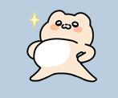
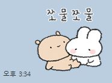
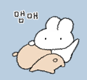
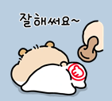
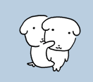
부담 0 — 빠질 길 확보능청·부끄한 척·스킨십 암시를 말로 하면 촌스럽다. 이모티콘이 대신 그려주고, 상대가 "ㅋㅋ 뭐야"로 받으면 그냥 귀여운 짤이 된다.
섹슈얼 토크 · 빌드업
빌드업 = 의미부여
평범한 말에 의미 한 방울. 받으면 빌드업 시작, 안 받으면 그냥 농담. 많은 여자가 이 장난을 은근히 즐긴다.
✕ 그냥 정보 확인
아무 일도 안 일어난다 — 사실 확인
✓ 의미부여 · 떡볶이 루틴
"자극적인" 한 겹에 공기가 달라진다
소재는 뭐든 — 음식·술·이지선다평범한 소재에 의미 한 겹만 얹으면 온도가 오른다. 다음 장에서 술·이지선다 루틴을 실제 카톡으로 본다. 야한 말 0개.
섹슈얼 토크 · 빌드업 실전
소재는 뭐든 된다
술도, 이지선다도 빌드업이 된다. 받으면 온도가 오르고, 안 받으면 그냥 농담 — 빠질 길은 늘 남는다.
🍶 복분자 술 루틴
'복분자'에 "네 몫까지 힘쓸게" 한 겹 — 은근한 뜻만 실린다.
🍜 닭백숙 이지선다
‹ 상대
너는 닭백숙 같은 남자가 좋아, 불닭볶음면 같은 남자가 좋아?
순하고 편한 사람 vs 자극적이고 위험한 사람 그거지
웃으며 답하는 사이 '자극·위험'이 자연스럽게 오간다.
섹슈얼 토크 · 빌드업
평범한 답도 이중의미로
"대화 잘 통해"·"듬직한 거" 같은 평범한 답에 한 겹만 얹는다. 답을 부정하지 않고 되받는 게 포인트.
✓ 원리 — 의미부여'듬직한 거'를 물리적 뉘앙스로 되받는다. 상대 답을 부정하지 않고 한 겹만 얹는 것이 핵심.
은근하게 가려면수위가 부담되면 "우리 은근 잘 통하지 않냐" — 같은 원리, 낮은 수위. 받으면 빌드업, 안 받으면 그냥 농담.
섹슈얼 토크 · 실전 (진짜 대화)
되치면, 상대가 스스로 올라온다
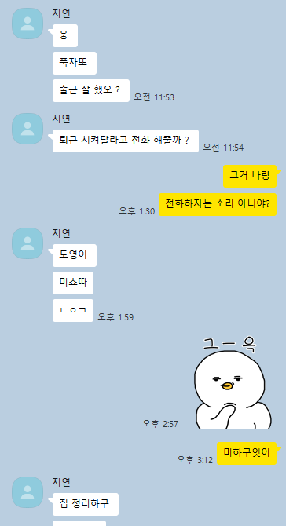
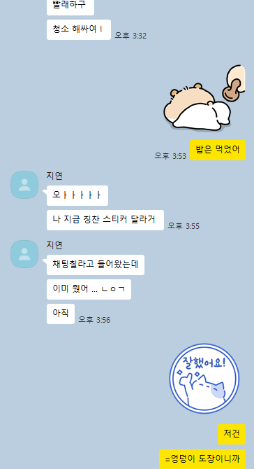
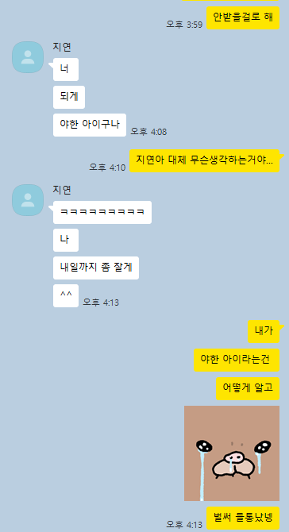
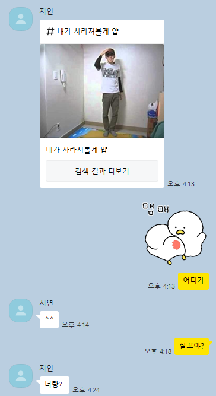
플러팅 · 텐션 빌드업
긴장은 신뢰 위에서만 매력이 된다
같은 말도 서먹한 사이에선 불쾌함, 편한 사이에선 설렘이다. 순서를 헷갈리지 마라.
✕ 친해지기 전에 수위부터
신뢰 없이 던지면 그냥 불쾌함
✓ 충분히 편해진 뒤 가볍게
바닥에 신뢰가 깔리면 같은 말도 설렘
타이밍 신호등🟢 대화 무르익음 · 장난 오감 · 약속 잡힘 | 🔴 단답 · 기분 다운 · 진지한 주제
수위는 사다리처럼
점프하지 말고 한 칸씩 밟아라
사람은 큰 부탁엔 방어하고, 작은 동의 뒤엔 다음 동의가 쉬워진다. 수위도 똑같다.
✕ 두세 칸 점프
‹ 그분
솔직히 너 보면 자꾸 딴생각 들어 오늘 밤 시간 돼?
상대를 멈춰 세운다
💡 왜 통할까한 칸씩 오르면 "끌려왔다"가 아니라 "함께 왔다"가 된다. 사다리는 압박이 아니라 동행이다.
수위는 사다리처럼
한 칸의 크기 — 5단계
| 칸 | 단계 | 성격 | 빠져나갈 출구 |
|---|
| 1칸 | 가벼운 칭찬 | 분위기 일반론 | 누구한테나 할 수 있는 말 |
| 2칸 | 사적인 관심 | '너'에 대한 호기심 | 농담의 외피 |
| 3칸 | 우리 사이 암시 | '우리'를 슬쩍 | 두 갈래 뜻 |
| 4칸 | 온도 있는 고백성 | 감정을 비침 | 명분(밤·콘텐츠) |
| 5칸 | 만남으로 넘기기 | 다음을 약속 | "글보다 직접" |
출구를 남겨라진한 해석·순한 해석을 둘 다 살린다. "자꾸 보게 되잖아"는 받으면 호감, 흘리면 농담이다.
💡 미지근하면 내려온다"갑자기?" "진지하네"는 그만 올리라는 신호. 변명 없이 농담으로 덮고 화제를 돌린다.
수위는 사다리처럼 · 퀴즈
이 멘트는 몇 칸일까?
사고는 대개 '칸 점프'에서 난다. 각 멘트가 몇 칸인지, 지금 온도에서 던져도 되는지 판정해보세요.
A"오늘 프사 분위기 좋다 ㅋㅋ"
B"우리 은근 코드 잘 맞지 않냐"
C"밤이라 그런가 너랑 떠드는 거 좋다"
함정상대가 방금 단답이었다면? 몇 칸이든 지금은 멈춤
💡 판정 순서먼저 신호등(초록·빨강)으로 던질 때인지부터 본다. 초록일 때만 칸을 센다. A=1칸 · B=3칸 · C=4칸.
만나기 전, 기대치 관리
사람마다, 만난 경로마다 속도가 다르다
한 번 통한 방식을 모두에게 똑같이 쓰지 마라. 상대를 읽고 속도를 맞춘다.
| 만난 경로 | 초기 개방도 | 접근 속도 |
|---|
| 가벼운 만남 목적의 앱 | 비교적 높음 | 빠르게 가도 무방 |
| 소개팅 · 지인 소개 | 중간 | 천천히, 신뢰 위주 |
| 취미 · 모임에서 알게 됨 | 낮음 | 아주 천천히 |
💡 잠수는 당신 잘못이 아닐 때가 많다원래 여러 명과 톡하던 사람, 다른 사람이 생김, 그날 기분 — 내가 뭘 보냈든 똑같이 일어났을 일이다. 회복 속도가 곧 실력이다.
차단 · 잠수 대처
마지막 한 통은 답을 받으려는 게 아니다
채널이 열려 있다면 딱 한 통. 추궁도 매달림도 없는, 나를 정리하는 인사다.
✕ 추궁하고 매달리는 톡
마무리가 아니라 상대의 부담을 키운다
✓ 추궁 없는 진정성 한 통
‹ 그분
연락 뜸한 거 보면 마음이 좀 멀어진 것 같더라
아무것도 요구하지 않고 담백하게 둔다
단, 차단이면 이 한 통조차 없다차단은 그 자체로 가장 분명한 답. 새 번호·다른 계정으로 우회하는 건 기술이 아니라 침범이다.
차단 · 잠수 대처
식은 번호와 닫힌 문은 다르다
다시 데워볼 여지가 있는 관계와, 떠나는 게 유일한 답인 관계를 구분하라.
| 구분 | 식은 번호 (다시 시도 가능) | 닫힌 문 (절대 금지) |
|---|
| 마지막 대화 | 나쁘지 않게, 흐지부지 | 거절 · 다툼 · 잠수로 끝남 |
| 차단 여부 | 채널 열림 | 차단됨 |
| 상대 의사 | 거부 표현 없었음 | 명확히 거부함 |
| 대응 | 가벼운 안부로 시도 | 떠나는 것이 답 |
💡 손절은 패배가 아니라 자기 보호거절을 존중하고 물러서는 사람이 "나는 내 가치를 안다"고 말하는 것이다. 매달릴수록 매력은 사라진다.
심화편을 닫으며
모든 기술의 바닥엔 단 하나가 있다
💡 이게 빠지면 어떤 기술도 무너진다
긴장을 만들고, 수위를 조절하고, 끝을 받아들이고, 멘탈을 지키는 법 — 그 바닥엔 상대를 사람으로 존중하는 것이 있다. "이 한 명이 내 전부가 아니다"가 깔리면 톡 전체의 온도가 바뀐다.
급할수록 천천히. 그게 어른의 속도다.
오늘 배운 것
첫 톡부터 심화까지, 이걸 가져갑니다
1강 마인드 3원칙 — 조급함·받는 사람·힘 빼기
2강 프사는 첫 톡보다 먼저 말한다
3강 첫 톡 = 관찰 → 단서 → 가볍게
4강 재촉은 자폭 · 읽씹엔 명분 5선
5강 감정형으로 데우고 미러링·캐치볼로 굴린다
6강 화술 4원리 — 극단·역발상·메타·완급
7강 호감은 점수로 읽고, 말은 신호 올 때 놓는다
8강 상황마다 정해진 한 수가 있다
9강 위기는 추궁 대신 명분으로 되살린다
10강 만남은 명분 깔고 날짜 좁혀 못 박는다
심화편 · 한 줄 리캡수위는 사다리처럼 한 칸씩 · 던질 땐 출구를 남기고 · 미지근하면 내려온다
결국 오늘의 전부① 여유로 값을 지키고 · ② 받는 사람이 되어보고 · ③ 대화를 잇는다
솔직히 말하면
원리는 다 드렸습니다. 근데 하나가 남아요
💡 오늘 강의가 못 해주는 것
원리는 누구에게나 같지만, 무너지는 지점은 사람마다 다릅니다. 그건 당신의 실제 카톡 화면을 같이 봐야 잡힙니다. 그래서 강의 후 소수만 따로 1:3으로 봅니다.
궁금하면 나갈 때 안내받아 가세요. 강요는 없습니다.
부록 안내
이 뒤는 외우는 게 아니라 찾아 쓰는 것
한마디 사전 · NG 리스트 · 신호 색인 · 체크리스트. 오늘은 목차만 훑고, 전체 버전은 PDF 책에 담겨 있습니다.
바로 쓰는 한마디 사전
막히면 이 표를 펴라
| 상황 | 한마디 |
|---|
| 첫 톡 말문 열기 | 프사 그거 어디예요? 분위기 좋아서 저장해둠ㅋㅋ |
| 대화가 끊겼을 때 | 아 맞다 이거 물어본다는 걸 깜빡함 |
| 읽씹 후 다시 | 방금 이거 보다가 생각나서 ㅋㅋ |
| 약속 꺼내기 | 이번 주말이랑 다음 주 중에 언제가 편해요? |
| 확답 받을 때 | 그럼 토요일 2시로 박아둘게요. 바뀌면 말해주고 |
| 밤 인사 | 내일 또 할 얘기 남겨둠ㅋㅋ 잘 자요 |
핵심여섯 개 중 하나만 골라 보낸다. 다 보내는 게 아니다.
NG 단어·표현 블랙리스트
이 말 하나만 빼도 답장률이 다르다
| 피해야 할 말 | 왜 식나 | 대체 |
|---|
| 자나요? | 추궁처럼 들림 | "아까 그거 어떻게 됐어요?" |
| 뭐해요? | 매번 똑같고 영혼 없음 | "오늘 그쪽 루틴 있어요?" |
| 바쁘세요? | 거절할 핑계를 깔아줌 | "토요일 2시 어때요?" |
| 답장 좀요 | 매달리는 티가 정면으로 | "방금 이거 보다가 생각나서 ㅋㅋ" |
| 혹시 시간 되면… | 자신 없음이 전해짐 | "우리 금요일에 보자" |
| 진짜 예쁜 것 같아요 | 이른 외모 칭찬은 부담 | "말투 특이하네요 ㅋㅋ" |
핵심빼는 게 더 강하다. 식는 말 하나 지우는 게 좋은 말 하나 더하는 것보다 효과가 크다.
신호 빠른 색인
한두 개로 단정 말고 방향을 봐라
| 호감 — 밀어도 됨 | 식음 — 멈춤 | 미룸 — 한 번 더 확인 |
|---|
| 안 물어본 자기 얘기 먼저 | 답이 한 단어로 짧아짐 | "다음에·나중에" 반복 |
| 답이 점점 빨라진다 | 먼저 연락이 사라짐 | 날짜 물으면 두루뭉술 |
| 먼저 질문을 던져 온다 | 읽고 한참 뒤 답 | 잡았다가 자주 미룸 |
| 만나자에 날짜 좁혀 옴 | ㅋㅋ·이모티콘 확 줆 | 답은 다정한데 만남만 피함 |
💡 왜 이렇게 읽나관심이 있으면 시간과 정보를 더 쓴다. 신호는 말의 내용보다 흐름의 방향에 있다.
보내기 전 체크리스트
손이 나가기 전, 3초만
① 첫 톡 전
☐ 그 사람에게만 할 수 있는 말?
☐ "네/ㅋㅋ"로 안 끝날 거리 있나?
☐ 내가 누군지 안 헷갈리나?
☐ 답 없어도 쿨할 마음 됐나?
② 답장 늦을 때
☐ 충분히 기다렸나? (반나절↓ 손떼기)
☐ 추궁하는 말 없나?
☐ 연속으로 또 보내려는 건 아닌가?
☐ 안 와도 그만이란 여유 있나?
③ 약속 꺼내기 전
☐ "또 보고 싶다"까지 데워졌나?
☐ 막연한 "언제" 말고 날짜 좁혔나?
☐ 만날 명분이 대화에 깔렸나?
☐ 거절해도 안 깨질 가벼운 톤?
실습 · 마지막
오늘 밤, 딱 한 통을 보냅니다
✍ 워크북에 지금 적기
타겟에게 오늘 밤~내일 정오 안에 보낼 한 줄
보내기 전 '첫 톡 체크리스트 ①'만 확인
일주일 뒤, 자가진단 After로 변화 체크
"이것만 따라 해도,
당신은 이미 초보가 아니다"
완벽하지 않아도 된다. 오늘 배운 걸 한 번 써보는 것부터.
Q & A
마지막으로
막히는 순간이, 다시 만날 타이밍입니다
오늘 쓴 첫 톡 한 줄을 찍어 공유하거나, 진짜 막히면 언제든 다시 찾아오세요.
[ QR · 링크 자리 ]
후기·후속 안내 채널 — 강사님이 실제 QR/링크로 교체